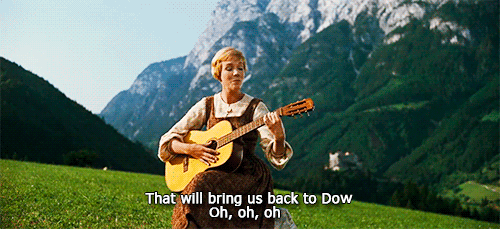

What is a stock?
When you buy stock you become part owner of a public company—no matter how many shares you own. If the stock price exceeds what you paid for it, your investment increases in value. If the stock price goes lower than what you
paid for it, your investment decreases in value. You risk only the money you invest.
Not all companies are public. Private companies are composed of an individual/family or a small group of investors that have private sources for funding growth; their shares are not for sale to the general public. Mars Corp, the snack food giant, is privately held. Google, the search engine company, was privately held until 2005, when it went public, offering its stock for sale.
If a company’s product or service is in great demand, demand may outstrip the ability of banks and venture capitalists (who privately supply funding) to provide money for the company’s expansion to meet that demand. At that point company leaders may
decide to “go public.”
Company management goes to investment bankers to negotiate an agreement to underwrite a stock offering known as an IPO (Initial Public Offering). The investment bankers buy all the shares that will be offered to the public at a set price
(primary market). In other words, they underwrite the IPO. The investment bankers then sell the stock to the general public (secondary market) in the hopes of making a profit.
Planet Money Episode 443: Don't Believe The Hype
You may have heard about a big milestone coming up for the Dow Jones Industrial Average. It's been all over the news: The Dow is creeping up towards twenty thousand. It's been hovering just below that mark for weeks now. And people are kind of freaking out.
But here's the thing about the Dow: It doesn't matter.
So, today, to contribute to the frenzy over Dow 20,000, we explain how the Dow is calculated—and why you should ignore it.
Since November 8th, Election Day, the Stock Market has posted $3.2 trillion in GAINS and consumer confidence is at a 15 year high. Jobs!
— Donald J. Trump (@realDonaldTrump) March 2, 2017
Readings
These questions should be answered in a format this is shared with me:
Google Drive for full credit or Codepen for extra credit.

- Why do we use the Stock Market as a measure of the entire economy?
- How does the Stock Market relate to our most basic economic principles: scarcity (of land, labor, capital) and opportunity cost?